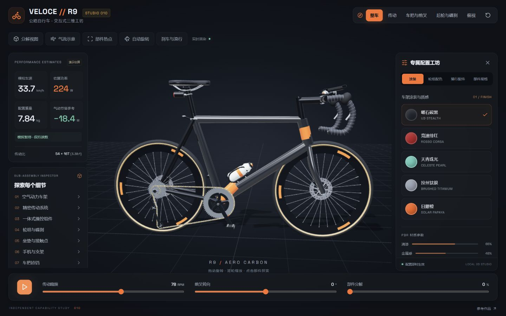
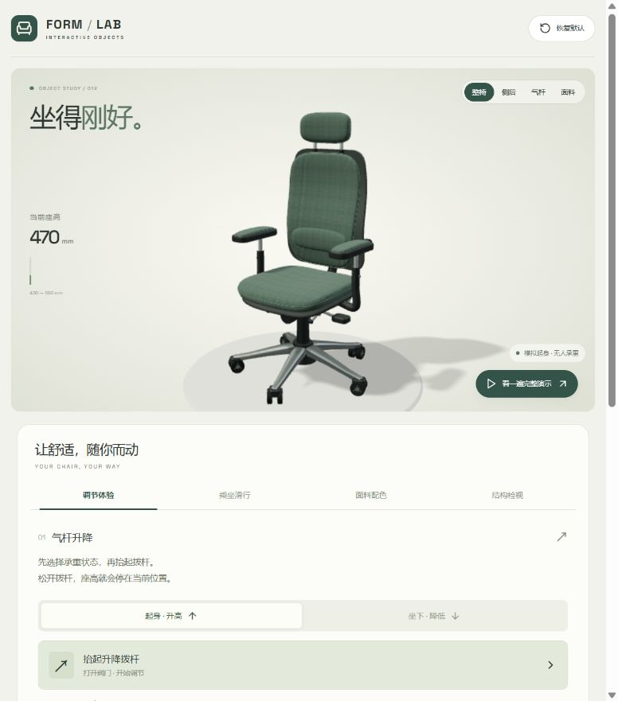

010 · Veloce Bike Studio
机械产品的 3D 实现参考：用 React + Three.js 展示材质配置、传动与制动联动、配件装配和部件检视，供产品配置器与结构教学复用。
理解项目定位，记录证据，按实际需要验证能力。
用真实产品效果理解界面、三维渲染与运动规则的分工。图片来自实际运行页面。

机械产品的 3D 实现参考：用 React + Three.js 展示材质配置、传动与制动联动、配件装配和部件检视，供产品配置器与结构教学复用。

家具产品的 3D 实现参考：用 React + Three.js 将升降锁定、织物材质、分步装配与人物乘坐滑行结合，展示产品交互的实现方式及质量边界。
| 编号 | 项目 / 状态 | 研究摘要 | 上游来源 | 网页 |
|---|---|---|---|---|
| 001 | Agency Agents 研究中 | 按领域和身份提供角色提示词、工作步骤与交付要求，覆盖工程、设计、测试等18个领域、279个角色；供我们按实际任务选取并验证能否提升效果，价值可能随模型升级变化。 | msitarzewski/agency-agents | 阅读研究 → 先看汇总图 → |
| 002 | Agency Agents 中文版 研究中 | 中文角色与工作方法库，提供20个部门、277个角色的职责、步骤和交付要求，并做中国场景适配；为我的项目研究、验证和中文文档沉淀提供可复用方法，后续可由独立编排器调度，实际增益待验证。 | jnMetaCode/agency-agents-zh | 阅读研究 → 先看汇总图 → |
| 003 | Agency Orchestrator 研究中 | 面向具体场景选择角色、拆分任务并按依赖编排执行，支持结果传递、运行留档与局部返工；适用于内容策划、产品方案和研究评审。对我们的价值是复用流程、追溯结果与减少重复执行；质量增益和角色冗余仍需后续用真实产品任务对照验证。 | jnMetaCode/agency-orchestrator | 阅读研究 → 先看汇总图 → |
| 004 | Ponytail 研究中 | 指导 AI 开发前先理解需求、优先复用已有代码与平台能力，以必要的新增代码完成需求，并提供改动审查、全库精简建议和已标记技术债汇总。核心是 Skill 工程规则，经插件与 Hooks、静态规则文件或 MCP 进入模型上下文，再由宿主 AI 读取项目、选择方案、修改和验证；属于提示约束，实际收益待对照验证。 | DietrichGebert/ponytail | 阅读研究 → 先看汇总图 → |
| 005 | Impeccable 研究中 | 面向前端界面优化：Skill 提供通用设计约束，用户明确风格和特殊要求，大模型据此细化方案并实现，检测器辅助检查。对我可作为网页改进的方法与验收参考；具体能力、适用场景和实际增益仍需后续逐项梳理与验证。 | pbakaus/impeccable | 阅读研究 → 先看汇总图 → |
| 006 | Narrator AI CLI Skill 研究中 | 影视解说制作 Skill，由 Codex 等 AI 助手理解需求并按规则组织流程；配套 CLI 上传素材、向服务端下发指令并查询结果，服务端执行文案、配音、剪辑与视频合成。总览图说明角色分工、素材处理和约束边界，成片效果待实测。 | NarratorAI-Studio/narrator-ai-cli-skill | 阅读研究 → 先看汇总图 → |
| 007 | Neko Master 研究中 | 从 Clash 等代理客户端内核采集连接与流量信息，保存历史并按设备、域名和节点展示；统计来自内核本地转发计数，无需远端同步。 | foru17/neko-master | 阅读研究 → |
| 008 | Humanizer 研究中 | 将 25 类写作问题与修改建议封装为 Skill，由宿主大模型结合原文和样文执行识别、改写与自检，减少 AI 模板腔并贴近作者语气。可作为研究文档、汇报和内容初稿的统一编辑规范；规则属于提示约束，中文效果与实际收益待验证。 | blader/humanizer | 阅读研究 → 先看汇总图 → |
| 009 | Subtrace 研究中 | 借助 Linux seccomp BPF 筛选网络相关系统调用，结合 Go 透明代理实现后端 HTTP 请求与响应的捕获、解析、过滤和展示；通常无需修改业务代码，用于接口联调和网络排障。 | subtrace/subtrace | 阅读研究 → 先看汇总图 → |
| 010 | Veloce Bike Studio 已完成 | 机械产品的 3D 实现参考：用 React + Three.js 展示材质配置、传动与制动联动、配件装配和部件检视，供产品配置器与结构教学复用。 | 参考网页 | 实现参考 → 体验 3D → |
| 011 | Security Audit Skill 研究中 | 指导 AI 从业务逻辑、身份权限、输入接口、数据与底层环境审查代码的安全质量；通过目标范围、路径追踪、覆盖记录、证据门槛、独立复核、执行边界和输出规范约束审计，形成可追溯结论与修复建议。附完整理解图及 Defending Code 对比，真实检出效果待验证。 | cloudflare/security-audit-skill | 阅读研究 → 先看汇总图 → |
| 012 | 升降椅交互工坊 已完成 | 家具产品的 3D 实现参考：用 React + Three.js 将升降锁定、织物材质、分步装配与人物乘坐滑行结合，展示产品交互的实现方式及质量边界。 | 参考网页 | 实现参考 → 体验 3D → |